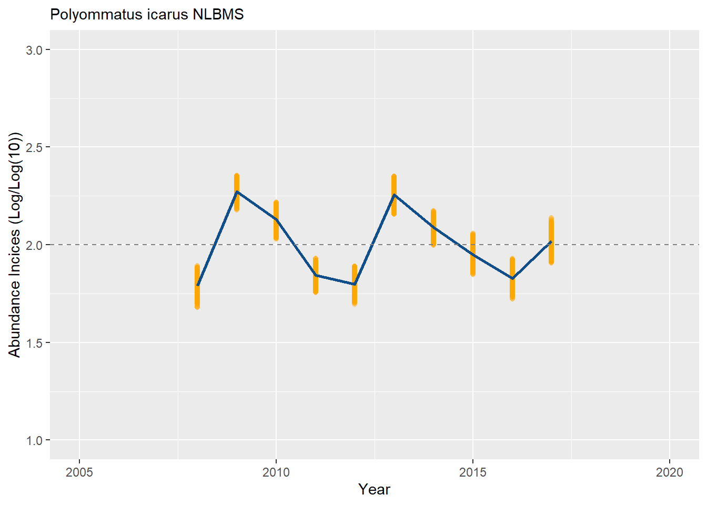

After having successfully computed estimates of the regional flight curve, you can now use this information together with your count data to estimate a total number of butterfly per monitoring site over a season. This will provide you with an estimated abundance for each site that can be used to compute a collated index over the entire regions or a group of sites.
For this task, we will used the flight curve computed earlier and the impute_count, site_index and finally collated_index functions available in rbms package
Here we will use the count and visit data.
# s_sp <- "Maniola jurtina"
s_sp <- "Polyommatus icarus"
region_bms <- c("NLBMS", "FRBMS")
b_count_sub <- readRDS("my_code/bms_workshop_data/work_count.rds")
m_visit_sub <- readRDS("my_code/bms_workshop_data/work_visit.rds")
setnames(m_visit_sub, c("transect_id_serial", "visit_date"), c("SITE_ID", "DATE"))
names(m_visit_sub) <- toupper(names(m_visit_sub))
setnames(b_count_sub, c("transect_id_serial", "visit_date", "species_name"), c("SITE_ID", "DATE", "SPECIES"))
names(b_count_sub) <- toupper(names(b_count_sub))
ts_date <- rbms::ts_dwmy_table(InitYear = 2008,
LastYear = 2017,
WeekDay1 = "monday")
ts_season <- rbms::ts_monit_season(ts_date,
StartMonth = 4,
EndMonth = 9,
StartDay = 1,
EndDay = NULL,
CompltSeason = TRUE,
Anchor = TRUE,
AnchorLength = 2,
AnchorLag = 2,
TimeUnit = "w")
MY_visit_region <- m_visit_sub[BMS_ID %in% region_bms, ]
ts_season_visit <- rbms::ts_monit_site(MY_visit_region, ts_season)
MY_count_region <- b_count_sub[BMS_ID %in% region_bms, ]
ts_season_count <- rbms::ts_monit_count_site(ts_season_visit, MY_count_region, sp = s_sp)
# ts_flight_curve <- rbms::flight_curve(ts_season_count,
# NbrSample = 500,
# MinVisit = 3,
# MinOccur = 2,
# MinNbrSite = 5,
# MaxTrial = 4,
# GamFamily = "nb",
# SpeedGam = FALSE,
# CompltSeason = TRUE,
# SelectYear = NULL,
# TimeUnit = "w"
# )
ts_flight_curve <- readRDS(file.path("my_code/bms_workshop_data", paste(gsub(" ", "_", s_sp), paste(region_bms, collapse="_"), "pheno.rds", sep = "_")))
pheno <- ts_flight_curve$phenoWith the phenology and teh observed counts, you can now impute values for missing week counts and adequately compute sites abundance index over the entire monitoring season.
impt_counts <- rbms::impute_count(ts_season_count = ts_season_count,
ts_flight_curve = pheno,
YearLimit = NULL,
TimeUnit = "w")
sindex <- rbms::site_index(butterfly_count = impt_counts, MinFC = 0.10)
saveRDS(sindex, file.path("my_code/bms_workshop_data", paste( gsub(" ", "_", s_sp), paste(region_bms, collapse="_"), "sindex.rds", sep="_")))Now that we have all each site index, we can collate them together to estimate annual abundance indices for the wider region, using the collated_index function in rbms. For this example, we will focus on the sites monitored in the Netherlands (NLBMS) and compute a collated index for Polyommatus icarus accross the site monitored in that region over the 10-year period.
bms_id <- "NLBMS"
sindex <- readRDS(file.path("my_code/bms_workshop_data", paste( gsub(" ", "_", s_sp), paste(region_bms, collapse="_"), "sindex.rds", sep="_")))
sindex[substr(SITE_ID, 1, 5) == bms_id, ]## SPECIES SITE_ID M_YEAR TOTAL_NM SINDEX
## 1: Polyommatus icarus NLBMS.1 2008 0.38968 87.251078
## 2: Polyommatus icarus NLBMS.10 2008 0.70761 0.000000
## 3: Polyommatus icarus NLBMS.100 2008 0.39172 12.764219
## 4: Polyommatus icarus NLBMS.11 2008 0.70421 12.780279
## 5: Polyommatus icarus NLBMS.12 2008 0.76831 1.301558
## ---
## 2516: Polyommatus icarus NLBMS.94 2017 0.35151 8.534608
## 2517: Polyommatus icarus NLBMS.95 2017 0.44468 0.000000
## 2518: Polyommatus icarus NLBMS.96 2017 0.69362 0.000000
## 2519: Polyommatus icarus NLBMS.97 2017 0.73042 20.536130
## 2520: Polyommatus icarus NLBMS.98 2017 0.48523 10.304392co_index <- collated_index(data = sindex[substr(SITE_ID, 1, 5) == bms_id, ],
s_sp = s_sp,
sindex_value = "SINDEX",
glm_weights = TRUE,
rm_zero = TRUE)
co_index$col_index## BOOTi M_YEAR NSITE NSITE_OBS COL_INDEX
## 1: 0 2008 203 137 24.46021
## 2: 0 2009 224 187 73.64242
## 3: 0 2010 236 191 52.79313
## 4: 0 2011 261 194 27.48493
## 5: 0 2012 277 189 24.85320
## 6: 0 2013 283 233 71.30772
## 7: 0 2014 277 224 48.47070
## 8: 0 2015 275 220 35.41614
## 9: 0 2016 258 192 26.56655
## 10: 0 2017 226 171 41.44783With this sample of site indices, we can compute the collated indices for multiple combination of sites. Using a bootstrap approach, we can now estimate the confidence interval around the estimated collated index, using the variation observed between monitoring sites. First we randomly draw n bootstrap samples, using the function boot_sample. This function sample with replacement from a the pool of all sites available. Because sampling is done with replacement, site can occur twice in a specific bootstrap sample and it will be treated as two independent sites (realisations). Here we use a 500 bootstrap, with set.seed() sake of cpu time and repeatability, but you should aim for 1000 sample and more and remove the set.seed() in the random number generator to generate different samples between runs.
bms_id <- "NLBMS"
set.seed(125361)
bootsample <- rbms::boot_sample(sindex[substr(SITE_ID, 1, 5) == bms_id, ], boot_n = 500)
co_index <- list()
## for progression bar, uncomment the following
pb <- txtProgressBar(min = 0, max = dim(bootsample$boot_ind)[1], initial = 0, char = "*", style = 3)
for (i in c(0, seq_len(dim(bootsample$boot_ind)[1]))) {
co_index[[i + 1]] <- rbms::collated_index(data = sindex[substr(SITE_ID, 1, 5) == bms_id, ],
s_sp = s_sp,
sindex_value = "SINDEX",
bootID = i,
boot_ind = bootsample,
glm_weights = TRUE,
rm_zero = TRUE)
## for progression bar, uncomment the following
setTxtProgressBar(pb, i)
}
## collate and append all the result in a data.table format
co_index <- rbindlist(lapply(co_index, FUN = "[[", "col_index"))
co_index$BMS_ID <- bms_id
co_index$SPECIES <- s_sp
co_index_boot <- co_index
saveRDS(co_index_boot, file.path("my_code/bms_workshop_data", paste( gsub(" ", "_", s_sp), bms_id, "co_index_boot.rds", sep="_")))Now that you have a collated index, and a series bootstrapped collated indices, you can compute a 95% Confidence Interval around your index and construct a figure to illustrate the temporal trend resulting from the annual indices. Here we will rescale and present the indices on a log(index)/log(10) scale. Confidence interval are computed using the 0.025 and 0.975 quantile from the n bootstrap sample.
bms_id <- "NLBMS"
co_index_boot <- readRDS(file.path("my_code/bms_workshop_data", paste( gsub(" ", "_", s_sp), bms_id, "co_index_boot.rds", sep="_")))
boot0 <- co_index_boot[ , mean(COL_INDEX, na.rm=TRUE), by = M_YEAR]
boot0[, LOGDENSITY0 := log(V1) / log(10)]
boot0[, meanlog0 := mean(LOGDENSITY0)]
# Add mean of BOOTi == 0 (real data) to all data
boot_ests <- merge(co_index_boot, boot0[, .(M_YEAR, meanlog0)],
by = c("M_YEAR")
)
boot_ests[, LOGDENSITY := log(COL_INDEX) / log(10)]
boot_ests[, TRMOBSCI := LOGDENSITY - meanlog0 + 2]
boot_ests[, TRMOBSCILOW := quantile(TRMOBSCI, 0.025), by = M_YEAR]
boot_ests[, TRMOBSCIUPP := quantile(TRMOBSCI, 0.975), by = M_YEAR]
ylim_ <- c(min(floor(range(boot_ests[TRMOBSCI <= TRMOBSCIUPP & TRMOBSCI >= TRMOBSCILOW, TRMOBSCI]))),
max(ceiling(range(boot_ests[TRMOBSCI <= TRMOBSCIUPP & TRMOBSCI >= TRMOBSCILOW, TRMOBSCI]))))
plot_col <- ggplot(data = boot_ests[TRMOBSCI <= TRMOBSCIUPP & TRMOBSCI >= TRMOBSCILOW, ], aes(x = M_YEAR, y = TRMOBSCI)) + geom_point(colour = "orange", alpha = 0.2) + ylim(ylim_) +
geom_line(data = boot_ests[TRMOBSCI <= TRMOBSCIUPP & TRMOBSCI >= TRMOBSCILOW, median(TRMOBSCI, na.rm=TRUE), by = M_YEAR], aes(x = M_YEAR, y = V1), size = 1, colour = "dodgerblue4") +
geom_hline(yintercept = 2, linetype = "dashed", color = "grey50") +
scale_x_continuous(minor_breaks = waiver(), limits = c(2005, 2020), breaks = seq(2005, 2020, by = 5)) +
xlab("Year") + ylab("Abundance Incices (Log/Log(10))") +
labs(subtitle = paste(s_sp, bms_id, sep = " "))
plot_col